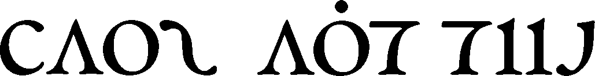

Aliceffekt invites the audience into an off-world excursion across miasmic landscapes, where brutal techno collides with forlorn melodies transmitted from a distant extinguished sun.
Aliceffekt is a electronic music project following the adventures of Neonev across Dinaisth.
A travel diary documenting the numerous voyages of Neonev through the fictional world of the Neauismetica, in which every album remembers a different time and a different place on Dinaisth.
Edits & Remixes
Special versions of tracks heard in live sets.
- Solvent - Formulate(Aliceffekt Edit). 160bpm 2024
- :Wumpscut: - Wreath Of Barbs(Aliceffekt Edit). 160bpm 2024
- The Swarm - Dead Systems(Aliceffekt Edit). 160bpm 2024
- scarlxrd - EARACHE.(Aliceffekt Edit). 160bpm 2024
- IVOXYGEN - destruction(Aliceffekt Edit). 160bpm 2024
- SOPHIE - One More Time fear. Popstar(Aliceffekt Edit). 160bpm 2024
- DeathbyRomy - XXXhibitionist(Aliceffekt Edit). 160bpm 2024
- Sara Landry - Skate(Aliceffekt Edit). 160bpm 2024
- :PAPERCUTZ - ルーズエンド(Aliceffekt Edit). 140bpm 2024
- Comaduster - Winter Eyes(Aliceffekt Remix). Tympanik Audio. 2013
- Veroníque - Fisherman II(Aliceffekt Remix). 2013
- iVardensphere - Ghostnote(Aliceffekt Remix). Metropolis Records. 2012
- Misteur Valaire - Dan Dan(Aliceffekt Remix). 2011
- Doomer - Weltenzerstorer(Aliceffekt Remix). 2010
- Iszoloscope - Dumachus Junction Feat. Aliceffekt. Ant-zen. 2010
- Stray - Does it really matter(Aliceffekt Remix). 2009
- Perfection Plastic - Bad Girls(Aliceffekt Remix). 2009
Compilations
Singles part of compilation albums.
- Aliceffekt - Never Forgive Me Never Forget Me, Hollow. 2025
- Aliceffekt - Barbarois, Diablo Tribute Album. 2024
- Aliceffekt - The Shern's Question: The Land, Elmet Brae. 2023
- Aliceffekt - Glenda's Travels: ChipsynthMD, Toy Company. 2019
- Aliceffekt - Our Forgotten Push(feat. Mega Ran): Mega Ran Japan Tour. 2013
- Aliceffekt - Thievery of the Jade Books: Kinetik Festival Volume 4, Artoffact. 2011
- Aliceffekt - Laeis 7th Passage E.th: Kinetik Festival Volume 3, Artoffact. 2010
Logo design by Jan Vranovský.

19U04— AMP Festival 2025, Montreal18Y04— AMP 18, Montreal
incoming: alicef the sixth season vetetrandes lettres beldam records ten axitecture collected works flactals neauismetica ver tale audio faqs devine lu linvega studio events 2025